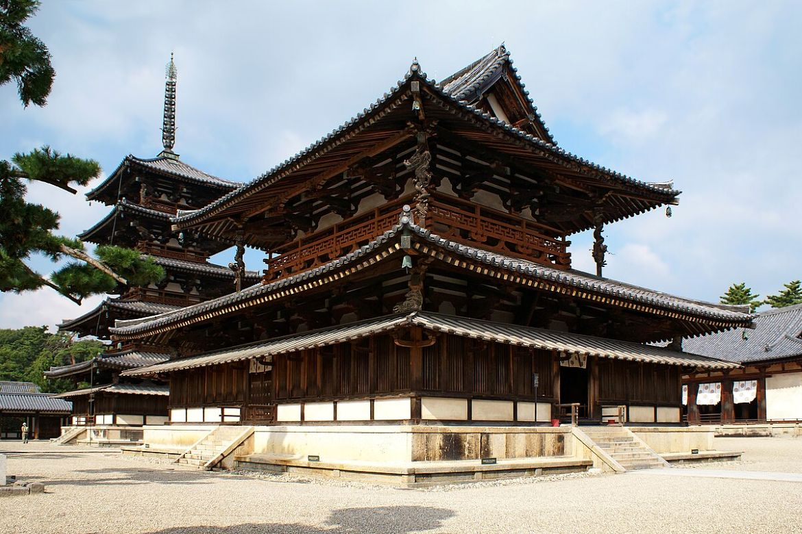
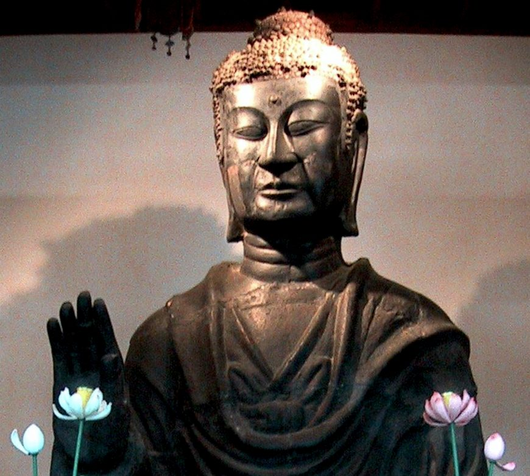
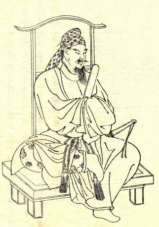
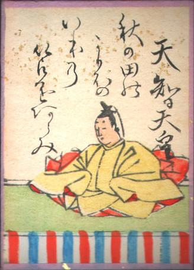

Buddhism was introduced to Japan from the Korean kingdom of Baekje, which the Yamato state had cordial relations with. The Baekje king gifted Buddhist texts to the Yamato court in 538 during the reign of Emperor Kinmei. The Asuka period is when the Yamato court utilised writing for the first time for record-keeping and for the administration of the state. The Japanese borrowed the Chinese script to represent native Japanese syllables, but Chinese was spoken by nobles and officials at court and used as the medium through which official documents were written. The Chinese language had a similar standing Latin had in Europe during the same period. Borrowing Chinese ideas and following Chinese models, the leaders of Yamato attempted to create a centralised state in order to reduce the power of the provincial lords that had emerged. The state was never fully successful in this endeavour.
Buddhism was slow to be picked up in Japan and was at first restricted to the Imperial Court. This was due to the fact that Buddhism has an extensive and complex canon which required someone to be, first of all, literate, and spend years of study to grasp the fundamental doctrine. This meant that initially Buddhism would be restricted to the upper classes, particularly court nobles and scholars. The general populace would come to follow Buddhism in later centuries when later schools offered a simpler doctrine that could be easily understood.

The Kondo Hall of the Horyu-ji, the oldest surviving wooden building, dates to the 7th century.

The Great Buddha of the Asuka-dera, cast in 609.
Members of the ruling class at court were also divided in their attitudes towards the new religion. Some members rejected the religion and advocated for the native Shinto religion to be observed lest the native kami gods be offended. Others were more open to it, seeing it as a cultured importation from China. There was some political motivations that increased tension along this division. The Mononobe clan was among the pro-Shinto faction, while the Soga clan were followers of Buddhism. These two clans eventually came to blows, with the Soga clan triumphant. The Soga had close connection with the Imperial family, marrying their daughters to the reigning emperor or the heir apparent.
The most famous proponent of Buddhism in Japan during the Asuka period was Prince Shotoku Taishi, who was the son of Emperor Yomei. Though a historical figure, many myths have been spun around his contribution to the spread of Buddhism in Japan. By the age of 2, it is said, he was able to read the entire Buddhist canon and was able to recite any sutra, and his intelligence was impressive to all at court. When he came of age, he acted as Regent to his aunt, the Empress Suiko, and is said to have written his Seventeen-Article Constitution, which codified laws in writing for the first time in Japanese history. He founded Buddhist temples throughout the country, including the Horyu-ji (607), whose main hall is one of the oldest surviving wooden buildings in the world. Centuries after his death, Prince Shotoku became deified and worshipped as a protector of Buddhism in Japan.
For most of the Asuka period, the capital of Japan was Asuka in the Yamato region. The Imperial Court modelled itself after China, implementing Chinese political philosophies, such as Confucianism, and administrative ideas as policies. Relations with China was carried out officially with Yamato embassies travelling to the Asian Mainland to pay tribute to the Chinese Emperor. In the diplomatic sphere, the Japanese envoys referred to their nation as Nihon, rather than the Chinese name of Wa, for the first time. Nihon means "Land of the Rising Sun".
Shortly after Prince Shotoku's death in 622, a group of anti-Soga nobles plotted against Soga domination at court. This plot was led by Nakatomi no Kamatari, Prince Naka no Ōe and Emperor Kotoku. They assassinated Soga no Iruka, the leader of the Soga, in the Isshi incident of 645 and took power after. These nobles initiated the Taika Reforms, which set out to reform the government and administrative system based on Chinese lines. They can be summarised as follows.
In the words of Bill Wurtz, in his famous video "history of japan":

Fujiwara no Kamatari

Prince Naka no Ōe (Emperor Tenji)
Prince Naka no Ōe would reign as Emperor Tenji from 668 to 671. He would promote Nakatomi no Kamatari and bestow him the surname of Fujiwara. Fujiwara no Kamatari's descendants would in the following period become the leading members of the Court. The Fujiwara would monopolise the highest offices in the land by creating familial ties with the Imperial family through marriage. The Taika Reforms were therefore the beginning of the history of the Fujiwara clan.
Over the following years, Japan would adopt more and more customs and practices from Tang China. This included adopting the Chinese lunar calendar, the Chinese system of court ranks, political ideas, and Chinese styles of art and architecture, as is seen from the many temples in Japan. Art and literature would be influenced heavily by Chinese precedents as well as featuring Buddhist themes. In poetry, for example, Tang poets such as Bai Juyi would profoundly influence Japanese poets of later centuries. Japanese poetry at this time featured many themes relating to nature and concepts such as love and parting, which aligns with the native temperament. The Kojiki and Nihon Shoki, written a few decades after the Taika Reforms, are structured the same way as Chinese histories. The influence of China as well as Buddhism would continue into the Nara period, which follows the Asuka period in 710 when the capital is moved to Nara. Buddhism would come to have an overbearing influence on the Imperial court throughout the following period.